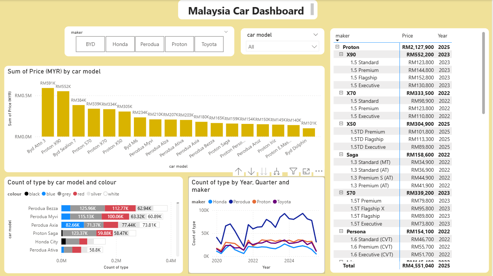

Malaysia Car Market Analysis Dashboard
📊 Project Overview
This project presents an interactive Power BI dashboard which is analysing the Malaysian car market. The dashboard combines an official open government data with real-world market pricing to provide an understanding into car registration trends, consumer preferences, and price distribution regarding major automotive brands.
🗂️ Data Sources
- data.gov.my
By integrating open government data with scraped market prices, this project highlights how multiple data sources can be transformed into meaningful business insights.
🛠️ Dashboard Features
- Interactive filters by car maker and car model
- Total and aggregated price analysis by model
- Car type distribution by colour preference
- Yearly and quarterly registration trends by manufacturer
- Hierarchical table view showing model variants and pricing
🔍 Key Insights
- Perodua dominates the mass market, indicating strong demand for affordable vehicles.
- Proton X90 and BYD Atto 3 show high total price values, reflecting growing interest in SUVs and electric vehicles.
- Neutral colours such as black, white, and silver are the most preferred across models.
- Vehicle registrations show a clear recovery trend after 2021, suggesting post-pandemic market growth.
💡 Why This Project Matters
This dashboard demonstrates my ability to perform end-to-end data analysis — from data collection and cleaning, to modelling, visualization, and insight generation. It shows how real-world analytical thinking relevant to roles in data analysis, business intelligence, and technology management.
⚙️ Tools & Skills Demonstrated
- Power BI (Data modelling, DAX measures, interactive visuals)
- Data cleaning and transformation
- Web data scraping concepts
- Analytical storytelling & dashboard design